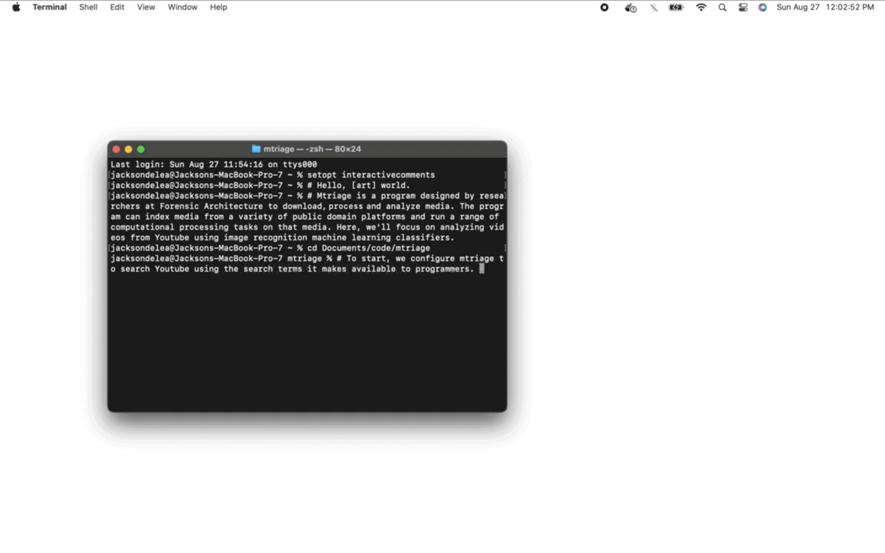

Mtriage: Open Source Sousveillance
In the words of the curators,
"Forensic Architecture, an interdisciplinary
research group, uses computational and spatial techniques to aid human
rights investigations. The organization developed a publicly-available
software suite called mtriage, which repurposes the image classification
techniques long used in facial recognition and other surveillance tools.
Users can bulk download media from sites like YouTube and analyze them
using computer vision techniques. In this way specific objects, like
tear gas canisters or tanks, can be identified and classified across
thousands of videos."

Together with Lucas Gelfond, Lachlan Kermode and Matt Goerzen,
I updated the code base for Mtriage (originally written in 2019),
wrote the script for the video, and produced it on my laptop. We produced the video in the style of Kali Linux
penetration tutorials, adapted to visual language of contemporary stock computing display preferences.
The video outlines the software's information architecture, and provides a demonstration of how users can develop search queries for bulk forensic analysis.